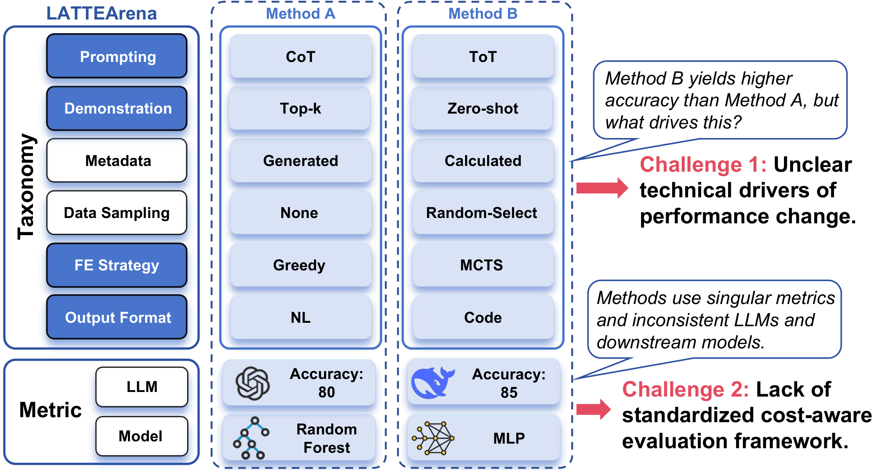
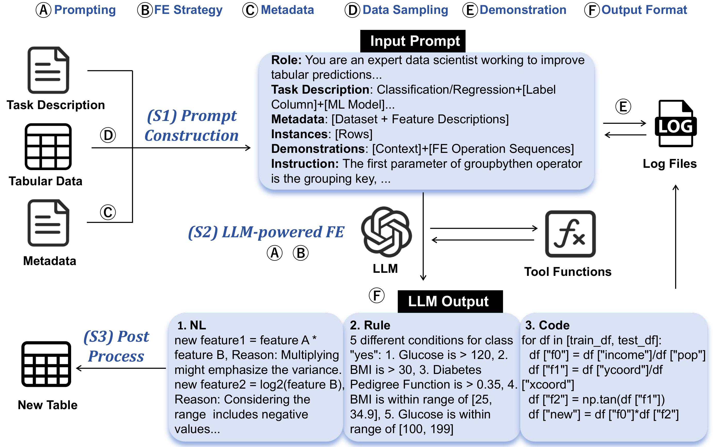
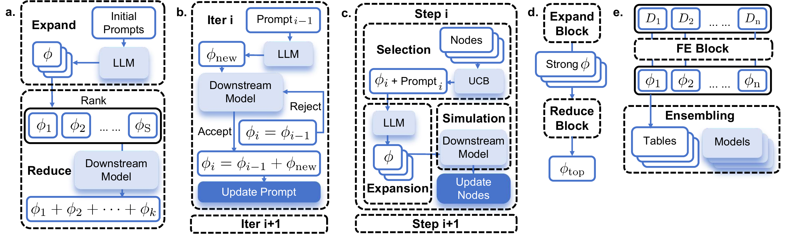
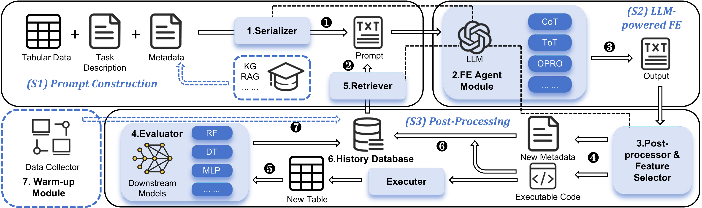
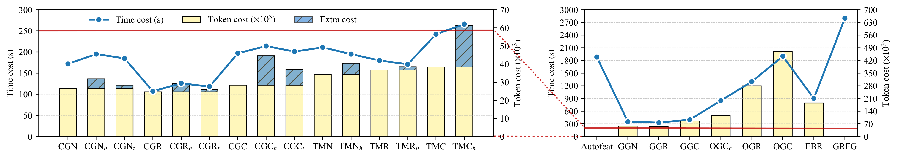
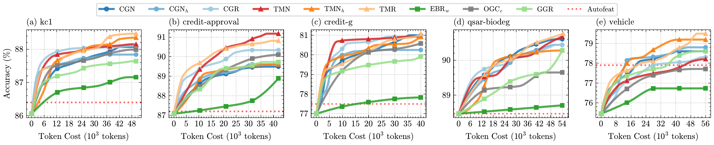
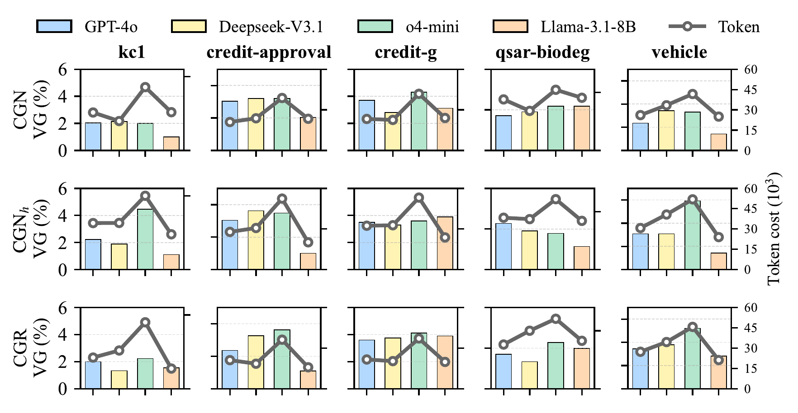
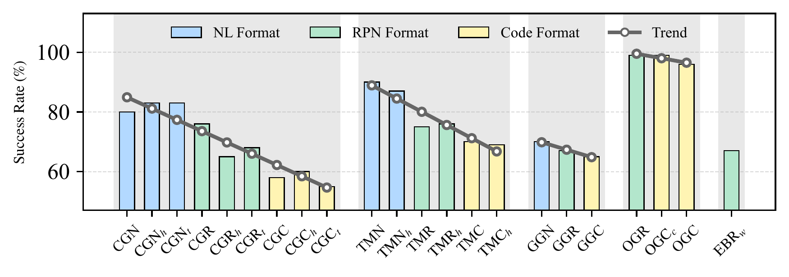

An Evaluation Framework for LLM-powered Tabular Feature Engineering
The first standardized, modular, and execution-safe benchmarking platform that deconstructs monolithic LATTE pipelines into reusable execution blocks — shifting the field from ad-hoc prompt tuning to systematic context engineering.
Distilling a combinatorial design space into systematic, cost-aware insight.
Feature engineering remains a cornerstone of tabular data analysis, and LLMs have emerged as a promising paradigm for its automation — giving rise to LLM-powered Automated Tabular Feature Engineering (LATTE). Yet the field lacks standardized, cost-aware evaluation, and a combinatorial explosion of design choices obscures true algorithmic progress.
We systematically deconstruct 15 representative LATTE methods into a unified 6-dimensional taxonomy, then introduce LATTEArena: a standardized, modular, extensible framework that decouples monolithic pipelines into reusable execution blocks. We evaluate 24 core configurations across 7 research questions, going beyond accuracy to quantify token efficiency and execution robustness.
The result: 17 empirical findings on cost-effectiveness trade-offs and 3 concrete recommendations for deployment. All code, datasets, and 4,000+ execution logs are public.
Despite rapid emergence, LATTE significantly lags behind other LLM-driven tabular tasks. The community confronts two critical, intertwined obstacles.
Existing methods are proposed as monolithic pipelines, arbitrarily bundling prompting paradigms, search strategies, and output formats. This entanglement makes it impossible to isolate which components actually drive gains versus which merely add overhead.
Current literature relies on fragmented setups and exclusively reports predictive accuracy. Crucial deployment metrics — token consumption, latency, and stability — are systematically neglected, leaving true cost-effectiveness obscured.

Fig 1. The LATTEArena taxonomy and challenges — Method B may beat Method A, but what actually drives the gain? And how do we compare cost fairly across inconsistent LLMs and downstream models?
Guided by validation feedback, the optimizer progressively improves downstream performance through three main stages — the conceptual backbone every LATTE method shares.
High-quality prompts guide the LLM toward effective feature generation, composed of six key components.
The optimizer 𝒫ℳ determines candidate transformations through iterative querying under a search strategy.
A parser translates textual output ϕ into executable programs, applies transforms, and logs (𝒞, ϕ) pairs for future rounds.

Fig 2. The LATTE pipeline and its six-dimensional taxonomy. Letters Ⓐ–Ⓕ mark where each design dimension enters the three-stage flow.
Despite apparent diversity, LATTE methods share a compact set of orthogonal axes. Prompting and FE Strategy primarily dictate behavior; the rest modulate cost and robustness.

Fig 3. The five FE strategies: (a) Expand-Reduce · (b) Greedy Incremental · (c) MCTS-based Exploration · (d) Best-of-N · (e) Select-Expand-Ensemble.
Compiled since CAAFE (2023) to span the current technique space, grouped by core prompting paradigm. Highlighted columns are the performance-driving dimensions.
| Family | Method | Venue | Ⓐ Prompting | Ⓒ Demonstration | Ⓔ Metadata | Ⓕ Sampling | Ⓑ FE Strategy | Ⓓ Output |
|---|---|---|---|---|---|---|---|---|
| CoT | CAAFE | NeurIPS'24 | Vanilla CoT | Full Context | Human-Written | Random | Greedy Incremental | Code |
| FEBias | NeurIPSW'24 | Vanilla CoT | Full Context | Calculated | Random | Greedy Incremental | NL | |
| GPT-Signal | FINNLP'24 | Vanilla CoT | / | LLM-Generated | Human | Greedy Incremental | NL | |
| RAFG | ICDM'25 | Vanilla CoT | / | RAG-Enhanced | / | Greedy Incremental | Code | |
| SMARTFEAT | CIDR'24 | Operator-based CoT | / | Native | / | Greedy Incremental | NL | |
| FeatLLM | ICML'24 | CoT + SC | / | Native | Cluster-based | Select-Expand-Ensemble | Rule | |
| FREEFORM | AMIA'25 | CoT + SC | Human-Written NL | / | Random | Select-Expand-Ensemble | NL | |
| ToT | LFG | IJCAI'25 | ToT | Positive-Negative | Native | / | MCTS Exploration | NL |
| Adda | SIGMOD'25 | ToT | Top-k Code Snippets | Calculated | Random | MCTS Exploration | Code | |
| OPRO | OCTree | NeurIPS'24 | CART-based OPRO | Top-k (Code,CART,Score) | Native | / | Greedy Incremental | Code |
| FEBP | Preprint'25 | Vanilla OPRO | Top-k (RPN,Score) | Native | / | Expand-Reduce | RPN | |
| Evo | ELLM-FT | AAAI'25 | EvoPrompt | Ranked (RPNSet,Score) | / | / | Best-of-N | RPN |
| LLM-FE | Preprint'25 | EvoPrompt | Top-k Code Snippets | Native | Random | Best-of-N | Code | |
| Critic | LPFG | IJCAI'25 | Generator-critic | Textual Gradient | Calculated | / | Incremental | RPN |
| Rouge One | Preprint'25 | Generator-critic | Textual Gradient | RAG-Enhanced | / | Greedy Incremental | Code |
The three-stage paradigm is realized through seven core modules with strict I/O specifications — any technique from the taxonomy can be plugged in or adaptively routed without touching the backbone.

Fig 4. The LATTEArena pipeline. Blue dashed boxes are optional modules adaptively routed by configuration; numbers ❶–❼ trace the iterative workflow.
Fuses task specs, metadata & tabular data via a unified template library, abstracting away prompting & format idiosyncrasies.
Constructs in-context demonstrations from the History Database, operationalizing the memory mechanisms.
The cognitive engine: policy optimizer 𝒫ℳ selects exploration strategies and interacts with the LLM to generate ϕ and context 𝒞.
Translates raw outputs into executable code with strict format constraints & LLM-based error recovery — the execution safety net.
Scores features with downstream models, integrating NAS & HPO for realistic full-AutoML evaluation.
Archives generated code, metadata & scores — with the Retriever, a structured framework for context management.
Pre-populates the database via RL-based algorithms, mitigating the cold-start bottleneck with high-quality few-shot guidance.
Fraction of LLM outputs parsed & executed without runtime error — maximized by strict constraints & error recovery.
A unified interface decouples the algorithmic search strategy from execution logic across prompts, formats, and LLM backends.
Strict abstraction barriers let any novel technique from the six dimensions plug in or be adaptively routed.
Inherently sanitizes and robustifies LLM outputs, preventing the runtime failures that plague code-generation methods.
Naively crossing every option yields an intractable space. Three configuration principles filter confounds and enforce rigor — producing 24 configurations × 4 metadata types = 96 unique pipelines.
Prioritize methodologically distinct approaches; strictly exclude stylistic variations or external dependencies (human-in-the-loop, RAG) that skew comparisons.
Enforce inherent design dependencies — e.g. pairing MCTS exclusively with ToT, or restricting the Warm-up module to the RPN format.
Exhaust foundational configurations before escalating to complex reasoning strategies, ensuring performance gains are cost-justified.
| Alias | Prompting | Strategy | Output | Demonstration | Maps to original methods |
|---|---|---|---|---|---|
| CGN / CGC / CGR | CoT | Greedy | NL · Code · RPN | / | SMARTFEAT, GPT-Signal, RAFG, FeatLLM, FREEFORM |
| CGNh / CGCh / CGRh | CoT | Greedy | NL · Code · RPN | Positive-Negative (h) | FEBias, CAAFE |
| CGNt / CGCt / CGRt | CoT | Greedy | NL · Code · RPN | top-k | New variant |
| TMNh / TMCh / TMRh | ToT | MCTS | NL · Code · RPN | Positive-Negative (h) | LFG, Adda |
| TMN / TMC / TMR | ToT | MCTS | NL · Code · RPN | / | New variant |
| GGN / GGC / GGR | Generator-critic | Greedy | NL · Code · RPN | Positive-Negative (h) | LPFG, Rouge One |
| OGCc | CART-based OPRO | Greedy | Code | top-k + CART | OCTree |
| OGC / OGR | OPRO | Greedy | Code · RPN | top-k | FEBP (RPN) · Base |
| EBRw / EBR / EBC | EvoPrompt | Best-of-N | RPN · Code | Ranked (+ warm-up) | ELLM-FT, LLM-FE |
Massive controlled benchmarking on 16 datasets (294 → 1M+ instances) and four LLM backbones — going beyond accuracy to token efficiency and execution robustness.
Task complexity dictates optimal search strategies. A sharp divergence: classification favors exploratory paradigms (Evo / OPRO reach the highest test gains), while regression favors greedy incremental approaches (CoT / ToT secure the highest AutoML gains).
Structured formats overcome NL's expressive bottleneck. RPN excels in classification via concise high-throughput exploration; Code strictly dominates regression where row-wise transforms exceed RPN's structural limits.
The evaluators in LATTE methods exhibit severe overfitting. Validation gains are drastically inflated relative to true downstream gains (e.g. OGR reports +3.55% VG but −0.32% AG). Best-of-N sampling partially mitigates this collapse.
Naïve history demonstrations degrade trajectories. Equipping CoT/ToT with history (h variants) often hurts — context-independent marginal scores isolate features from interactions, misguiding the evaluator.
Architectural complexity drives exponential cost. CoT→ToT/Critic incurs moderate growth (~1.3× / 2×), but evolutionary / optimization architectures trigger a near 10× surge — a steep scalability cliff.
LATTE is a new time-efficient paradigm. Most variants finish in ~10% of Autofeat/GRFG runtime; CGR concludes in just 5%, thanks to directed, semantic-driven exploration.
Demonstrations inflate input; format governs latency. Adding demonstrations raises total tokens by 19.6%; switching NL→RPN slashes output tokens 81.3% and cuts runtime 36.1%, while Code bloats output by over 150%.
CoT wins low budgets; ToT scales. A distinct crossover: CoT shows fast initial gains then hits greedy local optima, while ToT sustains scaling and surpasses CoT under high budgets.
Complex architectures need massive token investment. Critic, OPRO and Evo show poor token efficiency under restricted budgets — their advantages are strictly conditional on relaxed cost constraints.
Demonstrations dilute token efficiency. Positive-Negative gains in fixed-round settings are entirely offset by compounded input overhead per call; zero-shot structured prompts stay more cost-effective.

Cost. Average time/token cost across configs. Note the exponential surge from CoT to iterative OPRO/Evo, and demonstration overhead inflating input context.

Efficiency. Validation Gain vs token cost on 5 classification datasets — the CoT/ToT crossover and the prohibitive thresholds of complex methods.
CART delivers near-free cost savings; the OPRO loop monopolizes overhead. Replacing CART reasoning with raw metadata inflates tokens ~280% while slightly degrading VG — yet the OPRO feedback loop alone drives a 19× token surge, rendering the full pipeline impractical for standard tabular tasks unless budget constraints are entirely relaxed.
Evolutionary mutation synthesizes generalizable features, but warm-up quality sets the ceiling. The mutation phase predominantly boosts Test Gain and AutoML Gain, evidencing robust feature synthesis rather than validation overfitting. However, degrading the warm-up to a random collector collapses AG by up to 358%, confirming that collector quality — not the mutation operator — is the decisive bottleneck.
System bottlenecks dictate design priorities. Feature selection is the linchpin for temporal efficiency (removing it halves latency but collapses VG by 39.5%); metadata generation & compression govern the token-performance trade-off.

LLM backbones. Deepseek-V3.1 achieves Pareto optimality comparable to GPT-4o; o4-mini secures the highest VG at an ~80% token premium; Llama-3.1-8B struggles with instruction-following formatting.
Data scale regulates generalization. On large datasets (100k–1M) the validation-test gap virtually vanishes — sheer scale neutralizes overfitting risk without algorithmic intervention.
Task logic rigidly constrains format. When a task demands strict rule-based reasoning (e.g. poker-hand), Code's structural rigor achieves absolute dominance, superseding sophisticated prompting.
Expressiveness trades off with stability. Success rates degrade as formats grow expressive (NL > RPN > Code) — Code's unbounded flexibility triggers fabricated operators and hallucinatory features.
Iterative bottlenecks regularize generation. By constraining the LLM to refine exactly one feature per iteration, OGR and OGCc maintain a 99% success rate — a highly effective structural regularizer.

Robustness. Success rates across methods. The inverse relationship between format expressiveness and stability — and the near-perfect robustness of iterative OPRO.
Distilled from extensive evaluation of the sprawling design space, organized along overall performance, component design, and scalability.
Default to RPN zero-shot prompting (CGR, TMR) under tight budgets, tree-based planning (ToT/MCTS) at moderate budgets, and OPRO with Best-of-N only when budgets are ample — its gains carry super-linear cost. Orthogonally, pick Code for regression and RPN for classification.
Retain lightweight structural priors (e.g., CART-style reasoning) over bulky metadata, and keep the feature selector — the linchpin of both latency and validation gain. Trim metadata, instances, and calculated values to cut tokens cheaply, and skip history demonstrations whose input overhead outweighs their benefit.
On small datasets, counter LLM-evaluator overfitting with Best-of-N. Use Code for logic-bound tasks, and apply rule-based error-correction (or OPRO's single-feature refinement) to secure success rates.
No single method dominates across all data scales — the optimal choice shifts with task type and budget.
Algorithmic complexification yields diminishing returns relative to escalating query cost.
Existing demonstration forms remain cost-ineffective — future work must pivot to better tabular context management.
All code, datasets, and over 4,000 execution logs are publicly released to foster a dynamic, community-driven benchmark. Please cite the extended version on arXiv.
@misc{hao2026lattearenaevaluationframeworkllmpowered,
title={LATTEArena: An Evaluation Framework for LLM-powered Tabular Feature Engineering (Extended Version)},
author={Ankai Hao and Ke Chen and Huan Li and Lidan Shou},
year={2026},
eprint={2606.09004},
archivePrefix={arXiv},
primaryClass={cs.AI},
url={https://arxiv.org/abs/2606.09004},
}